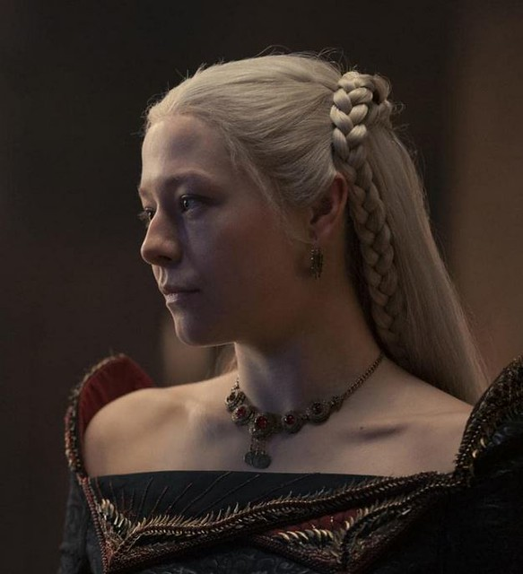

.png)
Juego de Tronos y La Casa del Dragón
Detalles
Autor: George R. R. Martin
Género: Fantasía, Literatura Juvenil, Literatura Adulta, Ciencia Ficción
Saga principal y libros complementarios: La saga principal consta de Juegos de tronos, Choque de reyes,Tormenta de espadas I,Tormenta de espadas IIy Festín de cuervosDanza de dragones. Los libros complementarios están compuestos por: El mundo de hielo y fuego , El caballero de los Siete Reinos y Fuego y sangre que forma una saga a parte acerca de la familia Targaryen.
Adaptaciones cinematográficas: Juego de Tronos serie cinematográfica por HBO Max y la saga que se remonta a los inicios del mismo mundo de La Casa del Dragón .
Trailer de Juego de Tronos T1:
Trailer de La Casa del Dragón:
Sinopsis
Sinopsis de Juego de Tronos:
Juego de Tronos es una serie de televisión que se desarrolla en un mundo ficticio medieval llamado Westeros. La historia sigue la lucha por el poder entre varias familias nobles que luchan por el control del Trono de Hierro, que representa el gobierno de los Siete Reinos.
La trama se centra en la lucha por el poder, la política, la intriga, la guerra, la magia y la traición entre las familias nobles, mientras una amenaza sobrenatural se acerca desde el norte del muro de hielo que protege los reinos de los peligros del más allá. A lo largo de las ocho temporadas, la serie presenta una amplia variedad de personajes complejos y diversas subtramas que se entrelazan para formar una historia épica y emocionante.
@Cyanide Studio by Wikimedia Commons
Sinopsis de La Casa del Dragón:
La casa del Dragón es una serie de fantasía y drama que tiene lugar en el mundo de Westeros, unos 300 años antes de los eventos de "Juego de Tronos". La trama se centra en la historia de la Casa Targaryen, una familia noble que es famosa por su capacidad de controlar a los dragones. La historia sigue la ascensión al poder de la casa Targaryen y la lucha interna por el control del Trono de Hierro, mientras una amenaza creciente se avecina en el horizonte.
A lo largo de la serie, se exploran temas como la política, la guerra, la traición y el drama familiar, todo ambientado en un mundo lleno de magia y misterio. La casa del Dragón promete ser una emocionante adición al universo de Juego de Tronos, llena de acción y suspense mientras revela más detalles sobre el fascinante mundo de Westeros.
Daenerys Targaryen by Wikimedia Commons
Personajes
Los personajes que conforman la saga de Canción de Fuego y Hielo (Juego de Tronos) son:
Daenerys Targaryen
Daenerys Targaryen, también conocida como "Madre de Dragones", es un personaje principal de la saga. Es la última heredera de la Casa Targaryen, que alguna vez gobernó los Siete Reinos, y busca recuperar su trono con el apoyo de sus dragones. A lo largo de la serie, evoluciona desde una joven inocente hasta convertirse en una líder poderosa e implacable, aunque a veces polémica.
Jon Snow
Jon Snow es el hijo bastardo de Eddard Stark y se une a la Guardia de la Noche, una organización que protege el reino de los peligros más allá del Muro. A lo largo de la serie, se convierte en un líder carismático y valiente, mientras lucha por proteger el reino de las amenazas que enfrenta.
Aria Stark
Arya Stark es la tercera hija de la Casa Stark y se convierte en una hábil asesina después de presenciar la muerte de su familia y pasar por múltiples dificultades. A lo largo de la serie, su objetivo es vengar a su familia y completar su lista de personas que quiere eliminar, mientras que también lucha por sobrevivir en un mundo peligroso y en constante cambio.
Cersei Lannister
Cersei Lannister es la hija mayor de la Casa Lannister y la reina consorte del rey Robert Baratheon. A lo largo de la serie, se convierte en una manipuladora y astuta política, luchando por mantener su poder y el de su familia en el juego de tronos. Su obsesión por el poder y su sed de venganza la llevan a tomar decisiones despiadadas y crueles, lo que la convierte en uno de los personajes más complejos y controversiales de la serie.
Tyrion Lannister
Tyrion Lannister es el tercer hijo de la Casa Lannister y es conocido por su inteligencia, ingenio y habilidad para sobrevivir en un mundo peligroso y traicionero. A lo largo de la serie, se convierte en un hábil político y consejero, luchando por proteger a su familia y mantener su posición en el juego de tronos, a menudo enfrentando la discriminación por su enanismo.
Otros personajes:
- Sansa Stark
- Jaime Lannister
- Bran Stark
- Eddard Stark
- Petyr Baelish
- Jorah Mormont
Los personajes que conforman la saga de La Casa del Dragón son:
Rhaenyra Targaryen
Rhaenyra Targaryen es la hija mayor del rey Viserys I Targaryen y la heredera legítima del Trono de Hierro. Después de la muerte de su padre, comienza una cruenta guerra civil conocida como la Danza de los Dragones, luchando contra su medio hermano Aegon II por el control del reino. Rhaenyra es una líder carismática y poderosa, pero también una figura polémica debido a sus decisiones y acciones en la guerra.

Rhaenyra Targaryen @Gwydion M. Williams by Flickr
Daemon Targaryen
Daemon Targaryen es perteneciente a la rama de los Targaryen conocida como los Reyes de la Danza. Fue el segundo hijo del rey Baelon Targaryen y el tío de Rhaenyra Targaryen. Damon es conocido por su papel en la Danza de los Dragones, donde lideró el ejército de su mujer (Rhaenryra Targaryen) y fue un poderoso jinete de dragones. También es conocido por su personalidad impetuosa y rebelde, lo que le causó algunos problemas en su relación con su familia y aliados.
Aemond Targaryen
Aemond Targaryen es un personaje perteneciente a la rama de los Targaryen. Fue el tercer hijo del rey Viserys I Targaryen y el hermano menor de Rhaenyra Targaryen. Aemond es conocido por su papel en la Danza de los Dragones, donde lideró el ejército de su padre enfrentándose a su hermana Rhaenyra por el poder al trono.
Alicent Hightower
Alicent Hightower es la segunda esposa del rey Viserys I Targaryen y la madre de Aegon II Targaryen. Alicent fue una figura influyente en la política de la corte Targaryen y tuvo un papel importante en la Guerra de la Danza, donde apoyó a su hijo en su lucha contra su medio hermana Rhaenyra Targaryen por el Trono de Hierro.
Otros personajes:
- Viserys Targaryen
- Rhaenys Targaryen
- Corlys Velaryon
- Ser Criston Cole
- Otto Hightower
Opinión personal
Opinión personal sobre Juego de Tronos:
En mi opinión, Juego de Tronos es una de las mejores series de televisión de todos los tiempos. Me encantó la complejidad de los personajes y la trama, y cómo cada uno tenía su propio arco de personaje convincente. También me gustó cómo la serie exploró temas importantes como la política, la familia y la lealtad, y cómo todo estaba envuelto en un mundo de fantasía. Sin embargo, también debo decir que me decepcionó un poco el final de la serie, ya que sentí que algunos personajes no recibieron el cierre que merecían. Pero en general, creo que Juego de Tronos fue una experiencia de televisión emocionante e inolvidable en mi vida.
Si no la has visto, te recomiendo que veas el trailer y te adentres en este mundo ⬆️(da click en la flecha)
Opinión personal sobre La Casa del Dragón:
En mi opinión, La Casa del Dragón es una serie fascinante que ha superado mis expectativas. La historia está llena de intriga, traición y emoción, y cada episodio me deja con ganas de más. Los personajes son complejos y están bien desarrollados, y la actuación es excelente en todos los aspectos. Además, la producción es impresionante, con una atención increíble al detalle en la creación del mundo de Westeros. Me gusta especialmente cómo la serie se adentra en la historia de los Targaryen y sus dragones, y estoy emocionado de ver cómo se desarrollarán los eventos en la Danza de los Dragones. En general, creo que LaCasa del Dragón es una adición emocionante al universo de Juego de Tronos y no puedo esperar para ver lo que vendrá después.
Si no la has visto, te recomiendo que veas el trailer y te adentres en este mundo ⬆️(da click en la flecha)
Si quieres acceder a más información puedes acudir a la página de Fandom